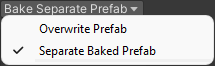

Texture Baking
The texture baking process is used to create a somewhat simplified high performance version of an imported character for use in complex scenes to avoid performance issues. This version of the character will maintain the highest possible visual quality.
The baking process will produce a separate ‘Baked Prefab’ which incorporates any user changes made to the materials before baking. This can be used identically to the prefab created by building the materials normally.
Character textures (skin, eyes etc.) and hair textures are handled differently and are discussed in their own sections below:
Texture Baking Workflow
Basic Baking Workflow
Firstly ensure that the character has been correctly imported and has had its materials built according to the steps in the Importing into Unity section of the documentation.
Open the character in a Preview Scene (see the link for details).
Prepare the character by making any material changes deemed necessary in the Materials Inspector (see the link for details)
Should you wish to modify the hair color see the section on Hair Recoloring for more details.
These changes can be conveniently evaluated using the many lighting setups available with the icon, and also with the animation player and facial expression tools.
Set the baking options from the two dropdown menus (only if needed)

Custom Shaders (Default) Uses materials with a custom ShaderGraph shader for very high quality and very good performance (Hair and Eyes only - Skin will use the default shader eg. HDRP/Lit, URP/Lit or Standard shader).
|
|
 |
Separate Baked Prefab (Default) The baked output will be written to a new prefab <name>_baked (in the same directory as the initially created prefab).
|
Once you are satisfied with the material settings and the desired options, then the process can be started with the button.
When baking is complete, a new prefab will be created in the ‘Prefabs’ sub-directory of the current model location as ‘<MODEL_NAME>_Baked.prefab’. The materials and baked textures will be written to to the ‘Baked’ sub-directory (these should all be retained).
{kind=link}
<Import Folder>
|-- Prefabs
| |-- <MODEL_NAME>.prefab
| |-- <MODEL_NAME>_Baked.prefab
|
|-- Baked
| |-- Materials
| |-- Textures
|
|-- Animations
|-- materials
|-- textures
|-- <MODEL_NAME>.fbm
|-- <MODEL_NAME>.fbx
|-- <MODEL_NAME>.json
Baking is the Final Step
Baking represents the final step, since no further material changes can be made to the baked prefab. Should you wish to update the baked prefab, then you must start the baking workflow again.
Hair Recoloring
{kind=link}
If you wish to adjust the hair color of the character, take the following steps:
Navigate to the hair material in the Materials Inspector treeview: it will be listed as ‘Hair_Transparency_Pbr’.
Linked Hair Materials Selected in the Treeview
Selecting ‘Hair_Transparency_Pbr’ will multiple select all of the relevant materials.
You can also manually navigate to hair materials by clicking on hair objects in the scene view window and opening up the materials in the inspector. Please note that you will have to enable color on each material individually.
In the (Standard) Inspector window, scroll to the very bottom and make sure the ‘Enable Color’ box is ticked.
Linked Hair Color Controls in the Inspector Window
This is intended to present a similar interface to that used for hair recoloring in Character Creator (in Modify - Material - Shader Settings).
Hair Recoloring in CC4 (click to enlarge)
Enable Color will allow use of the Color fields for Root Color, End Color, Highlight A Color and Highlight B Color along with all of the blend controls.
{kind=link}
Enabling Color - Expected Behavior
The immediate result of ticking/activating ‘Enable Color’ is that you may see a degradation in quality of the hair (this is especially noticeable for lighter hair colors). This is expected behavior. Illustrated below:
Hair appearance with ‘Enable Color’ Active |
Hair appearance with ‘Enable Color’ Inactive |
{kind=link}
{kind=link}
Please Note: At the end of the baking process, chosen hair settings will be incorporated into the hair texture and the ‘enable color’ flag disabled - this will return the hair to a high quality appearance (with new coloring).
Tip
To allow for the fact that with ‘Enable Color’ active may look different to the eventual result, a means of previewing the final result has been added.
Once the re-color settings have been made use the button to simulate baking of the hair and apply that to the scene model.
Evaluate the settings to see if they are satisfactory.
The bake simulation can be removed by clicking the button. This will leave the settings as they were when the simulation was applied, allowing you to fine tune the settings and quickly re-simulate them.
To reset the coloring to the original the re-build the materials.
Workflow continues…
Adjust the color and blend controls to your preference.
Simulate the final result with the button. If any refinement is needed, then remove the simulation with the button, then adjust the settings and try again.
Once finished, remove the simulation (not needed but it will leave the hair simulation on the initial prefab - this can however be removed at any time.)
Finalize any material settings as per Basic Baking Workflow
{kind=link}
The outcome of the bake is detailed in the Basic Baking Workflow section above.
Video Reference [Legacy]
The basic baking workflow is show in the video below: